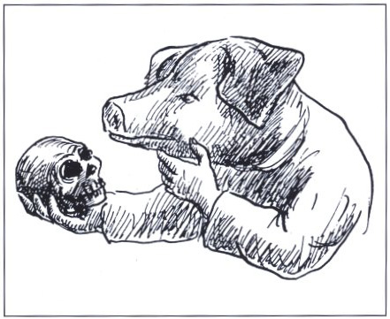

Live στη Θεσσαλονίκη !!!!!!!!!!!!!!!!
(την αφίσα την έφτιαξε ο Αχιλέας από τη Μαδρίτη) | |

Η σοφία είναι μία αλεπού, η οποία, μετά από μεγάλο κυνήγι, θα σας ξεπληρώσει, στο τέλος, τους μόχθους του ξετρυπώματος. Είναι ένα τυρί το οποίο όσο ποιο πλούσιο περιεχόμενο έχει, τόσο ποιο παχύ, άσχημο και τραχύ είναι το περίβλημα του. Είναι ένα φλασκί με «posset» κρασί, όπου όσο πιο βαθιά κατεβαίνεις τόσο γλυκό το βρίσκεις. Η Σοφία είναι μια κότα, της οποίας πρέπει να εκτιμήσουμε τα κακαρίσματα γιατί θα συνοδευτούν από αυγό. Τελικά όμως, είναι και ένα καρύδι, το οποίο, αν δεν το διαλέξεις σωστά, μπορεί να σου κοστίσει κάποιο δόντι και να σε ανταμείψει με σκουλήκια μονάχα.
Τζόναθαν Σουίφτ
[download mp3: xploding_plastix] | |
Το μεγαλείο της ισότητας απέναντι στον νόμο απαγορεύει και στους πλούσιους και στους φτωχούς, να κοιμούνται κάτω από γέφυρες, να ζητιανεύουν και να κλέβουν ψωμί.
Ανατολ Φράνς
[download mp3: ho_tsi_minh] | |
Μεγάλος άνθρωπος είναι εκείνος που δεν έχει χάσει την παιδική του καρδιά.
Κινέζικη σοφία
[download mp3: racer_hero] | |
Ο ποιητής δεν χρησιμοποιεί περιγραφές του κόσμου.
Συμμετέχει στη δημιουργία του.
Αντρέι Ταρκόφσκι
[download mp3: eric_aldea] | |
Η οσμή της σιωπής είναι τόσο παλιά.
Milosz
[download mp3: david_darling] | |
Ένας πέταγε τη γυναίκα του από το παράθυρο, και χίλιοι την καρτεράγαν.
Βυζαντινή παροιμία
[download mp3: all_about_eve] | |
Αν οι άνθρωποι συνηδειτοποιούσαν το νόημα της ζωής, θα υπήρχε έλλειψη από ψαροκάλαμα.
Doug Larson
[download mp3: budapest__jazz_orchestra] | |
Mounir Fatmi, 2006
Bienal de Sevilla | |
Tα έθνη είναι σαν τους «αφηγητές», οι οποίοι λένε στους εαυτούς τους και τους άλλους ιστορίες για το ποιοι είναι και από πού έχουν έρθει.
Homi Bhabha
[download mp3: bengal] | |
Ένα σωστό βήμα προς την λάθος κατεύθυνση.
Oscar Levant
[download mp3: ipiros] | |
«Η Τέχνη συμβαίνει».
Whistler
[download mp3: fred_frith] | |
Τα φαντάσματα δεν είναι ποτέ ορατά από περισσότερα του ενός πρόσωπα, στο πλαίσιο μιας συντροφιάς, η οποία διακατέχεται από οιαδήποτε, υψηλού βαθμού παραξενιά ή βαρεμάρα
Τζόναθαν Σουίφτ
[download mp3: negative_land] | |
Αν θέλεις την προκοπή σου, άσε κατά μέρος σκέψεις όπως αυτές : «Αν παραμελήσω τις δουλειές μου, δεν θα έχω να ζήσω». Είναι προτιμότερο να πεθάνεις από την πείνα, έχοντας ζήσει χωρίς σκοτούρες και χωρίς φόβους, παρά να ζεις στην αφθονία και να είσαι διαρκώς αναστατωμένος. Χύνεται λίγο λάδι ή σου κλέβουν λίγο κρασί ; Εσύ να λες μέσα σου : «Τόσο κοστίζει η ψυχική γαλήνη, τόσο η αταραξία». Τίποτα δεν δίνεται χάρισμα. Δεν είναι τόσο πλεονεκτική η θέση των άλλων, ώστε να εξαρτάται από αυτούς η δική σου ηρεμία.
Επίκτητος
[download mp3: noel_akchote] | |

Κωμωδία είναι τραγωδία συν χρόνος.
Carol Burnett
[download mp3: compulsion] | |

Σε ένα στενό και άβολο κελί στις φυλακές της Αλεξάνδρειας ο δημοσιογράφος της «International Herald Tribune» συνάντησε πριν από δυο βδομάδες ένα σεμνό παιδάκι 22 χρόνων, με μαλακή φωνή και αβρούς τρόπους. Τον Καρίμ Αμέρ. Είναι (ή μάλλον ήταν) οικότροφος σε ένα θρησκευτικό σχολείο, το Αλ-Αζχάρ, από τα έξι του χρόνια. Οχι κακός μαθητής. Ούτε με ροπή στο έγκλημα. Αλλά με μια κακή έξη που τον οδήγησε στα σίδερα: ο Καρίμ ήθελε να μπλογκάρει!
Κι όχι μόνο να μπλογκάρει, ήθελε και να λέει τη γνώμη του. Για το θρησκευτικό φανατισμό των δασκάλων του. Τις ακραίες απόψεις τους. Το σύστημα της ανελευθερίας στη μικρή κοινωνία που ζούσε. Στην υποχθόνια δικτατορία της Αιγύπτου, όπου μέχρι πρότινος οι τρεις μεγάλοι οργανισμοί των media ελέγχονται μεθοδικά από το κράτος, η θρασεία γνώμη του Καρίμ ήταν φυσικό να ενοχλήσει, παρ' ότι είχε μια χούφτα εσωτερικούς αποδέκτες (το blog του ήταν γραμμένο στα αραβικά, κι όχι ιδιαιτέρως δημοφιλές). Η φυλάκισή του ήταν μάλλον ένα καπρίτσιο των δασκάλων του, αλλά και δικό του. Οταν τον κάλεσαν να τον ανακρίνουν επί παντός του επιστητού (αν νηστεύει, αν εκκλησιάζεται, ακόμη και ποια είναι η γνώμη του για την ανθρωπιστική κρίση στο Νταρφούρ) και τελικά να του ζητήσουν να κατεβάσει τα επίμαχα ποστ, ο Καρίμ αρνήθηκε. Τον έκλεισαν ένα μήνα φυλακή για «συκοφάντηση του προέδρου της Αιγύπτου» και για «διάδοση απρεπών σχολίων που βλάπτουν το εθνικό κύρος».
Το συγκριτικά ήπιο συμβάν είναι μέρος μιας ηλεκτρονικής εξέγερσης που απεγνωσμένα τα αραβικά κράτη προσπαθούν να περιορίσουν. Χωρίς να έχουν κοινή γραμμή. Στην Αλγερία, επί παραδείγματι, οι σέρφερ είναι εντελώς ελεύθεροι να μπαίνουν σε όποια σελίδα θέλουν και να ποστάρουν άφοβα, αν και το κράτος έχει το μονοπώλιο των πιεστηρίων και της της τυπογραφικής μελάνης (!). Στο Ιράν οι αρχές συνέλαβαν τον Μοχτάμπα Σαμνινεζάντ επειδή διαμαρτυρήθηκε στο μπλογκ του για τη φυλάκιση άλλων μπλογκέρ και «προσέβαλε το κύρος του προέδρου» (το οποίο αποδεικνύεται εξαιρετικά ευπαθές). Στην Τυνησία, ασφαλίτες μπούκαραν σε ένα ίντερνετ καφέ, έσυραν βιαίως έξω τον Ζουαχίρ Γιαχαουί και τον βασάνισαν μέχρι να τους αποκαλύψει το password ενός σάιτ που είχε φτιάξει και στο οποίο είχε δημοσιεύσει ένα σατιρικό κουίζ για τον πρόεδρο Ζιν Αμπιντιν μπεν Αλι. Στη Βεγγάζη βρήκαν δολοφονημένο τον ηλεκτρονικό δημοσιογράφο Νταΐφ Αλ-Γκαζάλ, ένα μαχητικό πνεύμα που έκανε αποκαλυπτική δημοσιογραφία για το σάιτ Αλ Γιουμ -τα ακροδάχτυλά του ήταν κομμένα, μαφιόζικος συμβολισμός για όσους τον μιμούνται.
Οι αραβικές δικτατορίες, βέβαια, είναι ηλεκτρονικά πιο ερασιτέχνισσες από την Κίνα. Εκεί, όντως το ίντερνετ έχει φιμωθεί, με την εγκληματική συνέργεια του Google που «δίνει» κανονικά ονόματα αντιφρονούντων στην κυβέρνηση. Οι Αραβες άργησαν να καταλάβουν την άτακτη φύση του νέου μέσου, κάνοντας το λάθος να πιστέψουν ότι μπορούν να τον λογοκρίνουν επιλεκτικά. Αποτέλεσμα; Η φυλάκιση του Καρίμ, που υπό κανονικάς συνθήκας θα πέρναγε απαρατήρητη και θα τον συνέτιζε στα μουλωχτά, τώρα προκάλεσε ένα κύμα από ποστ, e-mail και διεθνή ηλεκτρονική αλληλεγγύη που οδήγησε στο άρθρο της «Ιντερνάσιοναλ Χέραλντ Τρίμπιουν» -ό,τι χειρότερο για τη γερασμένη δικτατορία Μουμπάρακ («La vache qui rit», όπως είναι γνωστότερος), που ψάχνεται παραζαλισμένη στη νέα εποχή.
Σε λίγες μέρες ο Καρίμ αποφυλακίζεται, αλλά με τη σταθερή του στάση απέναντι στο καθεστώς έχει αποκτήσει την αίγλη ενός περήφανου και αξιοπρεπούς role model για την ψηφιακή γενιά της Αιγύπτου. Η οποία μεγαλώνει μέσα σε ένα παράδοξο: παντού γύρω της είναι δικτατορία, αλλά σε απόσταση αφής, στο δωμάτιό της, υπάρχουν όλες οι δημοκρατίες της γης και του πνεύματος.
ΕΛΕΥΘΕΡΟΤΥΠΙΑ - Ιαν.2007
| |
(...) έχω ενώσει σκηνές, οι οποίες είναι σαν μουσικές νότες. Οι νότες μόνες τους δεν μπορούν να εκφράσουν τίποτε, όμως αν τις τοποθετήσεις στο σωστό μέρος γίνονται κάτι, σημαίνουν κάτι. Η ζωή είναι όπως ένα παζλ και οι ταινίες μπορεί επίσης να γίνουν όπως ένα παζλ. Όπως μια ομάδα από διαφορετικά κομμάτια που γίνονται κάτι, που σημαίνουν κάτι, μόνο όταν τα τοποθετήσεις στο σωστό μέρος και τα κοιτάξεις από μακριά.
Godard
Godard Fragmentado- εικόνα από το Chafarica Iconoclasta
http://chafarica.blogspot.com/ | |

(...) Κι' οι άλλοι κάθουντ' ήσυχοι στις θέσεις τους και μένουν.
μόνος ακόμα ο φαφλατάς Θερσίτης θορυβούσε,
πούξερε πάντα ένα σωρό παλάβρες ν' αραδιάζει,
και με τους πρώτους τάβαζε, τρελά με δίχως τάξη,
ότι θα κάνει νόμιζε τους άλλους να γελάσουν.
Άλλο πιο μισερό κορμί δεν ήρθε πέρα απ' τ' Άργος.
Είταν αλλίθωρος, κουτσός απ' τόνα πόδι, μ' ώμους
γυρτούς που μέσα πέφτανε στα στήθια, με χουνήσο
κεφάλι, μόλις λιγοστές πασπαλισμένο τρίχες.
Αφτόνε πια τον μάχουνταν απ' όλους ο Δυσσέας
κι' ο Αχιλιάς· γιατί μ' αφτούς φιλονεικούσε πάντα.
Και τότες πάλι με λαλιά στριγκίσα βλαστημούσε
τον Αγαμέμνο· κι' άκουγαν τα λόγια μ' αναγούλα
οι Δαναοί, και θύμωναν στα βάθια της καρδιάς τους.
Μα αφτός με βροντερές φωνές δεν έπαβε να σκούζει
« Τ' Ατρέα γιε, τί φταίξαμε και πάλι ; τί σου λείπει ;
Γιομάτο το καλύβι σου μαθές χαλκό, γυναίκες
έχεις πολλές και διαλεχτές, που πρώτα πρώτα εσένα
σ' τις δίνουμε άμα μπούμε εμείς σε κάνα πλούσιο κάστρο.
Ή το χρυσάφι ακόμα θες που τύχει να μας φέρει
και κάνας Τρώας προεστός για ξαγορά του γιου του,
που εγώ δεμένονε ή κανείς εδώ τον έφερε άλλος,
ή καμιά κόρη πούφερε ναν την κρατήσει χώρια
και μόνος ναν τη χαίρεται και ναν την αγκαλιάζει;
Είσαι αρχηγός μας κι' άπρεπο να μας ποτίζεις πίκρες.
Ά κολοκύθες, σίχαμα του κόσμου, Αργιτοπούλες,
όχι πια Αργίτες, πάρτε βρε τα πλοία να τραβάμε,
κι' ας μένει αφτός το βιός του εδώ κι' ας το ζεσταίνει μόνος,
κι' έτσι θα μάθει κι' αν εμείς φελάμε ή δε φελάμε.
Πού τώρα ακόμα πρόσβαλε τον Αχιλιά, έναν άντρα
πιο δυνατό του και πολύ· τι το πρεσβιό του πήγε
και τ' άρπαξε με το στανιό. Μα αλήθια αφτός δεν έχει
λίγη, Αγαμέμνο, μέσα του χολή, μον παραβλέπει·
αλλιώς, αφτή σου η αρπαγή θενάταν κι' η στερνή σου. »
Όμως εκεί τον αρχηγό που τον κακολογούσε,
να κι' ο Δυσσέας στη στιγμή προφταίνει και του ρήχνει
μιά άγρια ματιά, και με θυμό τού σταματάει τη γλώσσα
« Θερσίτη παλαβόστομε, που ξέρεις να φωνάζεις,
στάσου, και μόνος μη ζητάς μ' εμάς να λογοφέρνεις !
Γιατί από σένα λέω εγώ κορμί πιο σιχαμένο
εδώ κανένα με τους γιους δεν άραξε τ' Ατρέα,
και δε σου πάει τους αρχηγούς νάχεις εσύ στο στόμα,
κι' όλο για κείνους μ' άτσαλα να ρητορέβεις λόγια,
και στα πανιά να στέκεσαι μη βρεις καιρό να φύγεις.
Πώς θάβγει ακόμα αφτή η δουλιά κανείς δεν καλοξέρει,
αν για καλό μας ή κακό θ' αφίναμε την Τροία.
Μόν ένα λόγο θα σου πω που θα τον δεις να γίνει.
Έτσι αν σε τύχω άλλη φορά σαν τώρα να σαλιάζεις,
δε θέλω το κεφάλι μου στους ώμους πια να στέκει,
ή πίσω ζωντανό να βρω στο σπίτι το παιδί μου,
αν δε δε πιάσω κι' όλα σου τα ρούχα αν δεν σ'τα βγάλω —
την κάπα, το πουκάμισο, κι' όσα φοράς στη φύση —
και μ' άσκημο απ' τη συντυχιά στυλιάρι αν δε σε διώξω,
που έτσι κλαμένος και γυμνός να τρέχεις στα καράβια. »
Έτσι είπε, και με το ραβδί την πλάτη και τους ώμους
του κοπανάει γερά, κι' αφτός τη ράχη καμπουριάζει
και δάκρυ χύνει φλογερό. Και πρήξιμο στην πλάτη
αίμα γιομάτο ανέβηκε απ' του ραβδιού το χτύπο.
Και ζαρωμένος κάθησε, και νιώθοντας τον πόνο
τούρηξε μίσους μιά ματιά και σφούγγισε το δάκρυ.
Κι όλος εγέλασ’ ο λαός αν κι ήταν πικραμένος.
Όμηρος, Ιλιάδα Β' 211-269
| |
|
35 readers online
|